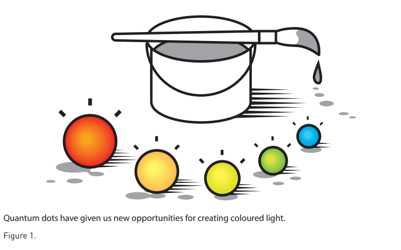
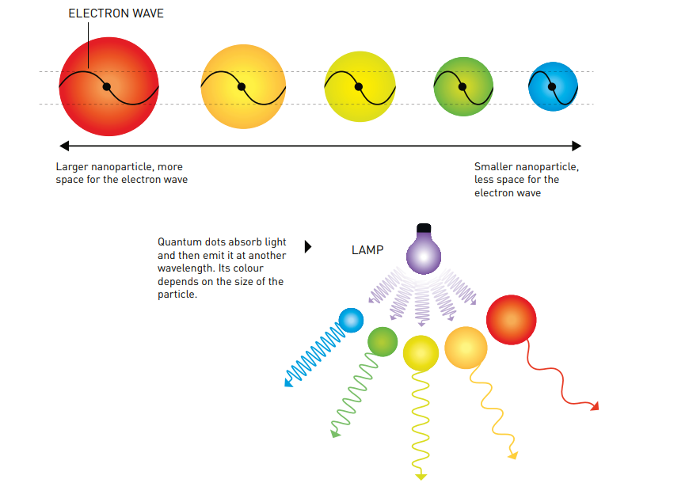
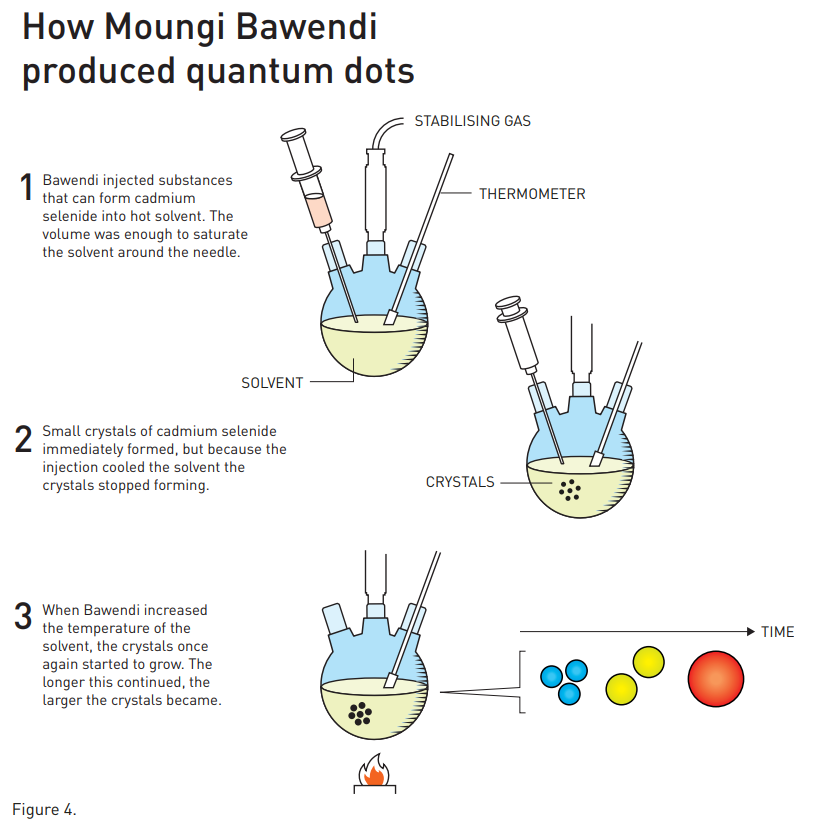
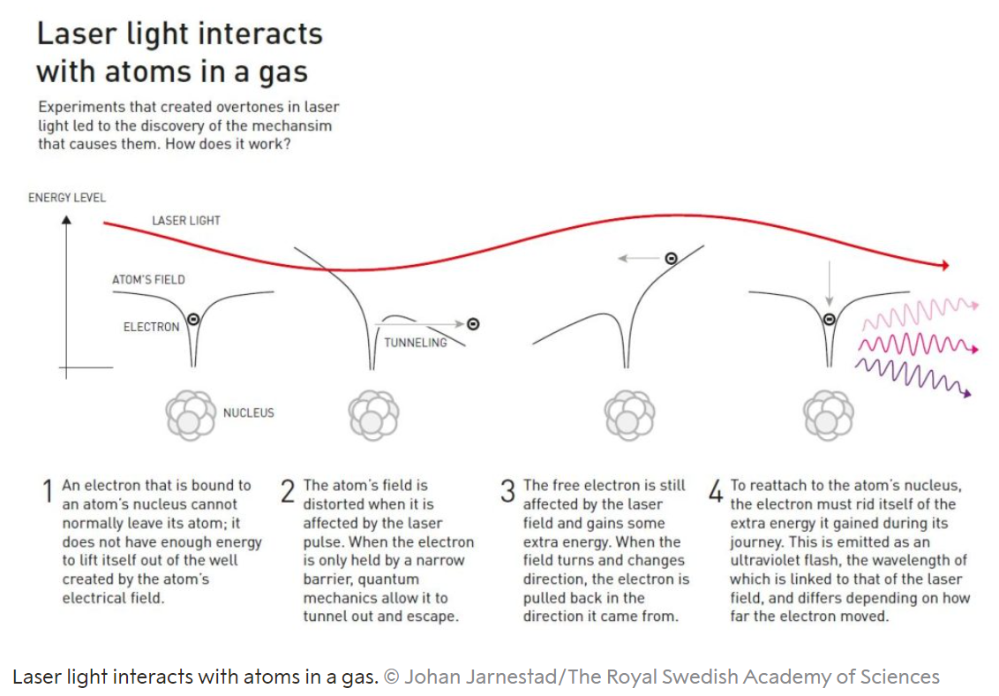
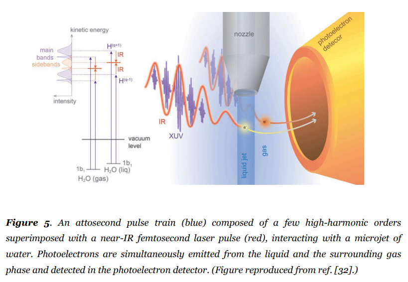

総評
平和賞: イランの女性の抑圧に対する闘争と人権と自由の促進のために、ナルゲス・モハンマディが受賞しました。彼女は13回逮捕され、31年の懲役と154回の鞭打ちを宣告されましたが、勇敢に表現の自由と自立の権利を主張しました。
文学賞: ノルウェーの作家ジョン・フォッセが受賞しました。「言葉にできないものに声を与える革新的な戯曲と散文」で評価されました。彼は様々なジャンルにおいて豊富な作品をノルウェー語ニーノシュクで書き、世界で最も上演される劇作家の一人になりました。
化学賞: 量子ドットの発見と開発により、ムンギ・G・バウェンディ、ルイス・E・ブラス、アレクセイ・I・エキモフが受賞しました。これらの微小な粒子は独特な性質を持ち、テレビ画面やLEDランプから光を放ちます。また、化学反応を触媒したり、手術中に腫瘍組織を明るく照らしたりすることができます。
物理学賞: 電子が原子や分子内で移動したりエネルギーを変えたりする速い過程を測定することができる極短パルス光を作る方法を実証した実験により、ピエール・アゴスティニ、フェレンツ・クラウス、アンヌ・リュイリエが受賞しました。
生理学・医学賞: COVID-19に対する有効なmRNAワクチンの開発を可能にした核酸塩基修飾に関する発見により、カタリン・カリコー、ドリュー・ワイスマンが受賞しました。彼らの画期的な発見は、mRNAが私たちの免疫系とどのように相互作用するかについての理解を根本的に変えました。
経済学賞: 労働市場における女性の役割の理解を促進した研究により、クローディア・ゴールディン氏が受賞しました。史上3人目の女性です。
文学賞: ノルウェーの作家ジョン・フォッセが受賞しました。「言葉にできないものに声を与える革新的な戯曲と散文」で評価されました。彼は様々なジャンルにおいて豊富な作品をノルウェー語ニーノシュクで書き、世界で最も上演される劇作家の一人になりました。
化学賞: 量子ドットの発見と開発により、ムンギ・G・バウェンディ、ルイス・E・ブラス、アレクセイ・I・エキモフが受賞しました。これらの微小な粒子は独特な性質を持ち、テレビ画面やLEDランプから光を放ちます。また、化学反応を触媒したり、手術中に腫瘍組織を明るく照らしたりすることができます。
物理学賞: 電子が原子や分子内で移動したりエネルギーを変えたりする速い過程を測定することができる極短パルス光を作る方法を実証した実験により、ピエール・アゴスティニ、フェレンツ・クラウス、アンヌ・リュイリエが受賞しました。
生理学・医学賞: COVID-19に対する有効なmRNAワクチンの開発を可能にした核酸塩基修飾に関する発見により、カタリン・カリコー、ドリュー・ワイスマンが受賞しました。彼らの画期的な発見は、mRNAが私たちの免疫系とどのように相互作用するかについての理解を根本的に変えました。
経済学賞: 労働市場における女性の役割の理解を促進した研究により、クローディア・ゴールディン氏が受賞しました。史上3人目の女性です。
2023年度ノーベル賞一覧
ノーベル化学賞
【総評】
2023年のノーベル化学賞は、量子ドットと呼ばれるナノメートルサイズの半導体結晶の発見と合成に対して、ムンギ・G・バウェンディ、ルイス・E・ブラス、アレクセイ・I・エキモフの3人に授与されました。量子ドットは、物質の電荷担体の量子力学的状態が物質の物理的サイズによって決まる新しいクラスの材料です。例えば、CdSe量子ドットの光吸収と発光は、可視光域のほぼ全域で粒子のサイズによって調整できます。量子ドットの発見と高精度で比較的簡単な化学的方法による合成は、ナノサイエンスとナノテクノロジーの発展において重要なステップでした。ナノサイエンスの基本原理は、ナノメートルスケールで物質や粒子を構造化またはパターン化すると、新しいサイズ依存性のある性質が生じ、それらを利用して新しい応用を可能にするというものです。さらに、量子ドットは、低コストで溶液中でバッチ化学反応を用いて高度に制御されたサイズ依存性のある性質を持つ材料を生成することができます。量子ドットは、照明やディスプレイ技術、生物医学イメージングなどの分野で高品質な発光体として使用されています。また、赤外光検出、太陽エネルギー変換、発光ダイオード、診断や光触媒などの分野でも応用が研究されています。
【受賞者と所属先】 ムンギ・G・バウェンディ（Moungi G. Bawendi）はマサチューセッツ工科大学（MIT）の化学教授です。彼は1993年に溶液中で均一なサイズと高い光学品質を持つ量子ドットを合成する方法を開発しました。 ルイス・E・ブラス（Louis E. Brus）はコロンビア大学の化学教授です。彼は1983年に溶液中で小さなCdS粒子の光学特性に量子サイズ効果が現れることを発見しました。 アレクセイ・I・エキモフ（Alexei I. Ekimov）はロシア科学アカデミー物理科学部門長です。彼は1981年にガラス中に埋め込まれたCuCl微結晶の光吸収スペクトルに量子サイズ効果が現れることを発見しました。
【受賞者と所属先】 ムンギ・G・バウェンディ（Moungi G. Bawendi）はマサチューセッツ工科大学（MIT）の化学教授です。彼は1993年に溶液中で均一なサイズと高い光学品質を持つ量子ドットを合成する方法を開発しました。 ルイス・E・ブラス（Louis E. Brus）はコロンビア大学の化学教授です。彼は1983年に溶液中で小さなCdS粒子の光学特性に量子サイズ効果が現れることを発見しました。 アレクセイ・I・エキモフ（Alexei I. Ekimov）はロシア科学アカデミー物理科学部門長です。彼は1981年にガラス中に埋め込まれたCuCl微結晶の光吸収スペクトルに量子サイズ効果が現れることを発見しました。



【受賞理由】
この年のノーベル化学賞は、量子ドットと呼ばれるナノメートルサイズの半導体結晶の発見と合成に対して授与されました。量子ドットは、物質の電荷担体の量子力学的状態が物質の物理的サイズによって決まる新しいクラスの材料です。量子ドットは、光学や電子工学、生物工学、エネルギー工学などの分野で革新的な応用を可能にする材料です。
【学術的貢献】 量子ドットの発見は、ナノメートルスケールで物質の性質が変化することを示す最初の例でした。量子ドットは、物質のサイズを単一のパラメータとして調整することで、光吸収や発光などの性質を制御できることを実証し、量子力学や固体物理学、半導体物理学、光物理学などの分野において、新しい現象や概念を生み出しました。特に、量子ドットの合成は、化学的方法によって高品質で均一なサイズのナノ粒子を生成することができることを示しました。量子ドットの合成は、溶液中で高温に加熱した溶媒に有機金属試薬を注入することで行われます。この方法は、さまざまな材料や形状の量子ドットを作るために適応されました。量子ドットの合成は、ナノサイエンスとナノテクノロジーの発展において重要な役割を果たしました。
【社会的インパクト】 量子ドットは、その高い発光効率や広い発光スペクトルによって、照明やディスプレイ技術に革命をもたらしました。量子ドットは、液晶ディスプレイや有機ELディスプレイに比べて高い色再現性や省エネ性を持つ量子ドットディスプレイや、高輝度で長寿命な量子ドットLEDなどの製品に応用されています。量子ドットは、その高い光安定性や広い吸収・発光スペクトルによって、生物医学イメージングにも革命をもたらしました。量子ドットは、水溶性や生体適合性を持つように表面修飾されて、細胞内外で生体分子を標識するために使用されています。量子ドットは、蛍光タンパク質や有機色素に比べて高い感度や多色性を持ち、がん細胞の検出や薬物送達などの分野で応用されています。量子ドットは、その可変なバンドギャップや高い光吸収係数によって、エネルギー工学にも革命をもたらしました。量子ドットは、赤外光検出器や太陽電池などの分野で応用が研究されています。具体的には、赤外光検出器: 量子ドットは、可視光よりも長い波長の赤外光を検出することができます。赤外光検出器は、暗視装置や医療画像診断などに利用されます。量子ドットは、従来の赤外光検出器に比べて高感度や低消費電力を実現できます。太陽電池: 量子ドットは、太陽光の広いスペクトルを吸収して電気に変換することができます。太陽電池は、再生可能なエネルギー源として注目されています。量子ドットは、従来の太陽電池に比べて高効率や低コストを実現できます。他にも、量子ドットは、発光ダイオードや光触媒などの分野でも応用が研究されています5。量子ドットは、エネルギー工学において多くの可能性を秘めた材料です。
【用語解説】 ナノサイエンス：1～100ナノメートルの領域における物質の性質や現象を研究する科学。ナノテクノロジーの基礎となる。ナノメートル：10億分の1メートル。原子や分子の大きさのオーダーであり、ナノサイエンスの対象となるスケール。励起子：半導体や絶縁体中で、電子と正孔がクーロン力で束縛された状態。光や電子線によって生成される。半導体：電気を通す導体と通さない絶縁体の中間の性質を持つ物質。シリコンなどが代表的な半導体材料である。IC（集積回路）：半導体素子を多数集積した電子回路。高集積化・高機能化が進んでいる。
【学術的貢献】 量子ドットの発見は、ナノメートルスケールで物質の性質が変化することを示す最初の例でした。量子ドットは、物質のサイズを単一のパラメータとして調整することで、光吸収や発光などの性質を制御できることを実証し、量子力学や固体物理学、半導体物理学、光物理学などの分野において、新しい現象や概念を生み出しました。特に、量子ドットの合成は、化学的方法によって高品質で均一なサイズのナノ粒子を生成することができることを示しました。量子ドットの合成は、溶液中で高温に加熱した溶媒に有機金属試薬を注入することで行われます。この方法は、さまざまな材料や形状の量子ドットを作るために適応されました。量子ドットの合成は、ナノサイエンスとナノテクノロジーの発展において重要な役割を果たしました。
【社会的インパクト】 量子ドットは、その高い発光効率や広い発光スペクトルによって、照明やディスプレイ技術に革命をもたらしました。量子ドットは、液晶ディスプレイや有機ELディスプレイに比べて高い色再現性や省エネ性を持つ量子ドットディスプレイや、高輝度で長寿命な量子ドットLEDなどの製品に応用されています。量子ドットは、その高い光安定性や広い吸収・発光スペクトルによって、生物医学イメージングにも革命をもたらしました。量子ドットは、水溶性や生体適合性を持つように表面修飾されて、細胞内外で生体分子を標識するために使用されています。量子ドットは、蛍光タンパク質や有機色素に比べて高い感度や多色性を持ち、がん細胞の検出や薬物送達などの分野で応用されています。量子ドットは、その可変なバンドギャップや高い光吸収係数によって、エネルギー工学にも革命をもたらしました。量子ドットは、赤外光検出器や太陽電池などの分野で応用が研究されています。具体的には、赤外光検出器: 量子ドットは、可視光よりも長い波長の赤外光を検出することができます。赤外光検出器は、暗視装置や医療画像診断などに利用されます。量子ドットは、従来の赤外光検出器に比べて高感度や低消費電力を実現できます。太陽電池: 量子ドットは、太陽光の広いスペクトルを吸収して電気に変換することができます。太陽電池は、再生可能なエネルギー源として注目されています。量子ドットは、従来の太陽電池に比べて高効率や低コストを実現できます。他にも、量子ドットは、発光ダイオードや光触媒などの分野でも応用が研究されています5。量子ドットは、エネルギー工学において多くの可能性を秘めた材料です。
【用語解説】 ナノサイエンス：1～100ナノメートルの領域における物質の性質や現象を研究する科学。ナノテクノロジーの基礎となる。ナノメートル：10億分の1メートル。原子や分子の大きさのオーダーであり、ナノサイエンスの対象となるスケール。励起子：半導体や絶縁体中で、電子と正孔がクーロン力で束縛された状態。光や電子線によって生成される。半導体：電気を通す導体と通さない絶縁体の中間の性質を持つ物質。シリコンなどが代表的な半導体材料である。IC（集積回路）：半導体素子を多数集積した電子回路。高集積化・高機能化が進んでいる。
ノーベル物理学賞
【総評】ノーベル物理学賞の受賞者はピエール・アゴスティニ、フェレンツ・クラウス、アンヌ・リュイリエの3人で、彼らは「物質中の電子ダイナミクスの研究のためにアト秒パルスの光を生成する実験的方法」によって受賞しました。彼らは強力なレーザー光と原子や分子の相互作用によって、極端紫外線（XUV）の領域で数百アト秒（10^-18秒）という超短時間の光パルスを作り出すことに成功しました。これにより、原子や分子、固体などの物質中で電子がどのように動くかを直接観測することが可能になりました。この技術は、量子力学や物理化学、物性物理学などの分野における新しい現象やメカニズムの発見に貢献しました。また、医療や工業などの応用分野にも大きな影響を与える可能性があります。
【受賞者と所属先】ピエール・アゴスティニはフランス国立科学研究センター（CNRS）とパリ第11大学（現在のパリ・サクレ・クール大学）の名誉教授です。彼は1979年に多光子電離（ATI）現象を発見し、強場レーザー原子物理学の分野を開拓しました。また、1994年には高次高調波発生（HHG）現象を利用した周波数変調法を提案し、アト秒パルス計測法の基礎を築きました。さらに、2001年には世界で初めてアト秒パルス列を実証しました。 フェレンツ・クラウスはドイツのマックス・プランク光学研究所とルートヴィヒ・マクシミリアン大学ミュンヘンの教授です。彼は1997年に当時最短だった4.5フェムト秒（10^-15秒）のレーザーパルスを生成し、その後2001年には世界で初めて孤立したアト秒パルスを実証しました。また、2007年には原子から放出される電子の時間遅延を測定することで、光電効果の時間分解を達成しました。さらに、2012年には生体分子や液体などへのアト秒分光法の応用を開始しました。 アンヌ・リュイリエはスウェーデンのルンド大学の教授です。彼女は1991年に高次高調波発生（HHG）現象のメカニズムを数値計算で解明し、1994年には量子論的な理論を構築しました。また、1996年から1998年にかけて、高次高調波発生（HHG）現象からアト秒パルス列を生成する方法や計測法を提案し、実証しました。さらに、2017年には原子の電子放出の時間遅延を正確に測定することで、光電効果の時間分解における矛盾を解決しました。
【受賞者と所属先】ピエール・アゴスティニはフランス国立科学研究センター（CNRS）とパリ第11大学（現在のパリ・サクレ・クール大学）の名誉教授です。彼は1979年に多光子電離（ATI）現象を発見し、強場レーザー原子物理学の分野を開拓しました。また、1994年には高次高調波発生（HHG）現象を利用した周波数変調法を提案し、アト秒パルス計測法の基礎を築きました。さらに、2001年には世界で初めてアト秒パルス列を実証しました。 フェレンツ・クラウスはドイツのマックス・プランク光学研究所とルートヴィヒ・マクシミリアン大学ミュンヘンの教授です。彼は1997年に当時最短だった4.5フェムト秒（10^-15秒）のレーザーパルスを生成し、その後2001年には世界で初めて孤立したアト秒パルスを実証しました。また、2007年には原子から放出される電子の時間遅延を測定することで、光電効果の時間分解を達成しました。さらに、2012年には生体分子や液体などへのアト秒分光法の応用を開始しました。 アンヌ・リュイリエはスウェーデンのルンド大学の教授です。彼女は1991年に高次高調波発生（HHG）現象のメカニズムを数値計算で解明し、1994年には量子論的な理論を構築しました。また、1996年から1998年にかけて、高次高調波発生（HHG）現象からアト秒パルス列を生成する方法や計測法を提案し、実証しました。さらに、2017年には原子の電子放出の時間遅延を正確に測定することで、光電効果の時間分解における矛盾を解決しました。


【受賞理由】この3人の受賞理由は、「物質中の電子ダイナミクスの研究のためにアト秒パルスの光を生成する実験的方法」にあります。彼らは強力なレーザー光と原子や分子の相互作用によって、極端紫外線（XUV）の領域で数百アト秒（10^-18秒）という超短時間の光パルスを作り出すことに成功しました。これにより、原子や分子、固体などの物質中で電子がどのように動くかを直接観測することが可能になりました。この技術は、量子力学や物理化学、物性物理学などの分野における新しい現象やメカニズムの発見に繋がっています。
【学術的貢献】アゴスティニは1980年代に多光子電離過程を発見し、HHG現象を初めて観測しました。また、高次高調波の周波数変調効果を利用したアト秒パルス計測法（RABBIT法）を開発しました。クラウスは1990年代に数サイクルレーザーパルスを用いてHHGスペクトルを拡張し、単一アト秒パルスを初めて実現しました。また、アト秒パルスと走査型電界計測法（streaking法）を組み合わせて、原子や分子から放出される光電子の時間遅延を測定しました。リュイエは1990年代にHHG過程の理論的解明に貢献し、再散乱モデルや量子論的な枠組みを提案しました。また、位相安定な干渉効果を利用してアト秒パルス列からHHGスペクトルを再構成する手法（RABBIT法）を開発しました。
【社会的インパクト】アト秒科学は物質中の電子ダイナミクスを直接観測することができる新しい分野です。これにより、原子や分子の構造や反応機構、固体や液体の電気伝導性や光学特性など、物質の基本的な性質や機能に関する深い理解が可能になります。また、アト秒科学は化学、物理、生物、医学など様々な応用分野にも貢献しています。例えば、化学反応の遷移状態や分子間相互作用のダイナミクスを追跡したり、生体分子や細胞の光励起や光損傷のメカニズムを解明したり、血液中の病気のバイオマーカーを高感度に検出したりすることができます。アト秒科学はノーベル賞受賞者たちの革新的な研究によって開拓された分野であり、今後も物質科学の発展に大きな影響を与えると期待されます。
【用語解説】アト秒: 10の-18乗秒という非常に短い時間の単位です。原子や分子の電子の運動の時間スケールと同じくらいです。光電効果: 電磁波（光など）が物質に当たると、電子が放出される現象です。放出された電子を光電子と呼びます。この現象は、光と電子の量子的な性質を理解するために重要です。高次高調波発生: 強いレーザーパルスが気体や固体などの物質に照射されると、レーザーの周波数の高い倍数（高次高調波）の光が発生する非線形過程です。この過程によって、極端紫外線（XUV）やX線といった短波長の光を生成することができます。アト秒パルス: 高次高調波発生によって生成される、アト秒オーダーの持続時間を持つ非常に短い光パルスです。アト秒パルスは、物質中の電子のダイナミクスを実時間で観測するために使われます。波粒子二重性: 光や電子などの量子的な対象は、波としても粒子としても振る舞うことができるという性質です。この性質は、アインシュタインやド・ブロイらによって提唱されました。
【学術的貢献】アゴスティニは1980年代に多光子電離過程を発見し、HHG現象を初めて観測しました。また、高次高調波の周波数変調効果を利用したアト秒パルス計測法（RABBIT法）を開発しました。クラウスは1990年代に数サイクルレーザーパルスを用いてHHGスペクトルを拡張し、単一アト秒パルスを初めて実現しました。また、アト秒パルスと走査型電界計測法（streaking法）を組み合わせて、原子や分子から放出される光電子の時間遅延を測定しました。リュイエは1990年代にHHG過程の理論的解明に貢献し、再散乱モデルや量子論的な枠組みを提案しました。また、位相安定な干渉効果を利用してアト秒パルス列からHHGスペクトルを再構成する手法（RABBIT法）を開発しました。
【社会的インパクト】アト秒科学は物質中の電子ダイナミクスを直接観測することができる新しい分野です。これにより、原子や分子の構造や反応機構、固体や液体の電気伝導性や光学特性など、物質の基本的な性質や機能に関する深い理解が可能になります。また、アト秒科学は化学、物理、生物、医学など様々な応用分野にも貢献しています。例えば、化学反応の遷移状態や分子間相互作用のダイナミクスを追跡したり、生体分子や細胞の光励起や光損傷のメカニズムを解明したり、血液中の病気のバイオマーカーを高感度に検出したりすることができます。アト秒科学はノーベル賞受賞者たちの革新的な研究によって開拓された分野であり、今後も物質科学の発展に大きな影響を与えると期待されます。
【用語解説】アト秒: 10の-18乗秒という非常に短い時間の単位です。原子や分子の電子の運動の時間スケールと同じくらいです。光電効果: 電磁波（光など）が物質に当たると、電子が放出される現象です。放出された電子を光電子と呼びます。この現象は、光と電子の量子的な性質を理解するために重要です。高次高調波発生: 強いレーザーパルスが気体や固体などの物質に照射されると、レーザーの周波数の高い倍数（高次高調波）の光が発生する非線形過程です。この過程によって、極端紫外線（XUV）やX線といった短波長の光を生成することができます。アト秒パルス: 高次高調波発生によって生成される、アト秒オーダーの持続時間を持つ非常に短い光パルスです。アト秒パルスは、物質中の電子のダイナミクスを実時間で観測するために使われます。波粒子二重性: 光や電子などの量子的な対象は、波としても粒子としても振る舞うことができるという性質です。この性質は、アインシュタインやド・ブロイらによって提唱されました。
ノーベル生理学・医学賞
【総評】2023年のノーベル生理学・医学賞は、mRNAワクチンの開発に貢献したカタリン・カリコとドリュー・ワイスマンに授与されました。彼らは、mRNAの塩基修飾が免疫系との相互作用に重要な役割を果たすことを発見し、mRNAを治療法として利用するための基礎を築きました。彼らの研究は、COVID-19パンデミックに対応する高効率なワクチンの開発を可能にしました。
【受賞者と所属先】カタリン・カリコは、ハンガリー出身の生化学者で、ドイツのバイオテクノロジー企業BioNTechの上級副社長を務めています。また、ペンシルバニア大学医学部の客員教授でもあります。カリコは、RNAの生物学的特性や応用に関する研究を長年行ってきました。特に、mRNA（メッセンジャーRNA）を改変して免疫系の認識を回避し、タンパク質の産生を向上させる方法を発見しました。この発見は、mRNAワクチンの開発に不可欠なものでした。ドリュー・ワイスマンは、医師で免疫学者で、ペンシルバニア大学医学部の教授です。ウイスマンは、HIV（ヒト免疫不全ウイルス）や他の感染症に対するワクチン開発に関心を持っており、カリコと共同でmRNA技術を改良しました。ウイスマンは、mRNAが細胞内でどのように認識されるかや、どのようなシグナル伝達経路が活性化されるかを明らかにしました。また、mRNAを標的細胞に効率的に送達するための脂質ナノ粒子（LNP）というシステムも開発しました。
【受賞者と所属先】カタリン・カリコは、ハンガリー出身の生化学者で、ドイツのバイオテクノロジー企業BioNTechの上級副社長を務めています。また、ペンシルバニア大学医学部の客員教授でもあります。カリコは、RNAの生物学的特性や応用に関する研究を長年行ってきました。特に、mRNA（メッセンジャーRNA）を改変して免疫系の認識を回避し、タンパク質の産生を向上させる方法を発見しました。この発見は、mRNAワクチンの開発に不可欠なものでした。ドリュー・ワイスマンは、医師で免疫学者で、ペンシルバニア大学医学部の教授です。ウイスマンは、HIV（ヒト免疫不全ウイルス）や他の感染症に対するワクチン開発に関心を持っており、カリコと共同でmRNA技術を改良しました。ウイスマンは、mRNAが細胞内でどのように認識されるかや、どのようなシグナル伝達経路が活性化されるかを明らかにしました。また、mRNAを標的細胞に効率的に送達するための脂質ナノ粒子（LNP）というシステムも開発しました。


【受賞理由】カリコとワイスマンは、in vitroで合成されたmRNAが免疫系に認識されて炎症反応を引き起こすことを発見しました。彼らは、これがmRNA中のウリジン塩基がトール様受容体3（TLR3）、7（TLR7）および8（TLR8）に結合することによるものであることを突き止めました。彼らは、ウリジン塩基を修飾された塩基（例えば擬ウリジンやN1-メチル擬ウリジン）に置き換えることで、TLRへの結合を阻害し、炎症反応を抑制することができることを示しました。さらに、修飾された塩基を含むmRNAは、タンパク質合成に必要な因子や酵素とより効率的に相互作用し、細胞内でのタンパク質産生量を増やすことができることも明らかにしました。
【学術的貢献】カリコとワイスマンの発見は、mRNA技術の発展における画期的なものでした。彼らは、in vitroで合成されたmRNAが自然界に存在しない特徴を持ち、それが免疫系によって異物として認識されることを明らかにしました。彼らはまた、その問題を解決するための方法論を提案し、実証しました。彼らは、自然界に存在するRNAに見られる修飾された塩基を用いることで、mRNAの安定性や翻訳効率を向上させるとともに、免疫系による不要な反応を回避することができることを示しました。彼らの発見は、mRNAワクチンのプラットフォームを臨床的に有用なものにするための重要な一歩でした。
【社会的インパクト】 カリコとワイスマンの発見は、COVID-19パンデミックに対応するためのmRNAワクチンの開発に不可欠でした。mRNAワクチンは、従来のワクチンよりも迅速かつ柔軟に作製することができます。また、高い安全性と有効性を示しました。mRNAワクチンは、世界中の人々の命を救い、感染症の拡大を抑えるために大きな役割を果たしました。また、mRNA技術は、他の感染症やがんなどの治療にも応用される可能性があります。カリコとワイスマンの発見は、医学における革新的な貢献であり、人類にとっての偉大な恩恵です。
【用語解説】mRNA（メッセンジャーRNA）：DNAから転写された情報を運ぶ分子で、細胞内でタンパク質を合成するためのテンプレートとして機能します。in vitro：試験管や培養皿などの人工的な環境で行われる実験や操作を指します。修飾された塩基：RNA中の通常の塩基（アデニン、ウリジン、グアニン、シトシン）に化学的な変化を加えたもので、RNAの構造や機能に影響を与えます。TLR（トール様受容体）：細胞表面や細胞内に存在する受容体で、細菌やウイルスなどの病原体由来の分子パターンを認識して免疫反応を引き起こします。炎症反応：免疫系が組織への損傷や感染に対して起こす防御的な反応で、発赤、腫脹、熱感、痛みなどの現象を伴います。ワクチン：感染症から身体を守るために用いられる医薬品で、弱めた或いは不活化した病原体やその一部分子を注射することで、特異的な免疫応答を誘発し、記憶細胞を作ります。
【学術的貢献】カリコとワイスマンの発見は、mRNA技術の発展における画期的なものでした。彼らは、in vitroで合成されたmRNAが自然界に存在しない特徴を持ち、それが免疫系によって異物として認識されることを明らかにしました。彼らはまた、その問題を解決するための方法論を提案し、実証しました。彼らは、自然界に存在するRNAに見られる修飾された塩基を用いることで、mRNAの安定性や翻訳効率を向上させるとともに、免疫系による不要な反応を回避することができることを示しました。彼らの発見は、mRNAワクチンのプラットフォームを臨床的に有用なものにするための重要な一歩でした。
【社会的インパクト】 カリコとワイスマンの発見は、COVID-19パンデミックに対応するためのmRNAワクチンの開発に不可欠でした。mRNAワクチンは、従来のワクチンよりも迅速かつ柔軟に作製することができます。また、高い安全性と有効性を示しました。mRNAワクチンは、世界中の人々の命を救い、感染症の拡大を抑えるために大きな役割を果たしました。また、mRNA技術は、他の感染症やがんなどの治療にも応用される可能性があります。カリコとワイスマンの発見は、医学における革新的な貢献であり、人類にとっての偉大な恩恵です。
【用語解説】mRNA（メッセンジャーRNA）：DNAから転写された情報を運ぶ分子で、細胞内でタンパク質を合成するためのテンプレートとして機能します。in vitro：試験管や培養皿などの人工的な環境で行われる実験や操作を指します。修飾された塩基：RNA中の通常の塩基（アデニン、ウリジン、グアニン、シトシン）に化学的な変化を加えたもので、RNAの構造や機能に影響を与えます。TLR（トール様受容体）：細胞表面や細胞内に存在する受容体で、細菌やウイルスなどの病原体由来の分子パターンを認識して免疫反応を引き起こします。炎症反応：免疫系が組織への損傷や感染に対して起こす防御的な反応で、発赤、腫脹、熱感、痛みなどの現象を伴います。ワクチン：感染症から身体を守るために用いられる医薬品で、弱めた或いは不活化した病原体やその一部分子を注射することで、特異的な免疫応答を誘発し、記憶細胞を作ります。